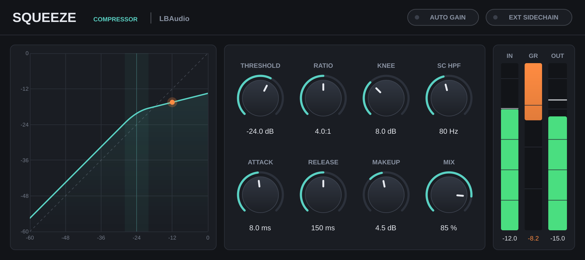

Compressor plugin · VST3 & AU
Squeezeby LBAudio
A clean, zero-latency compressor that shows you exactly what it's doing to every peak.
Instant download. Any local VAT is worked out at checkout. Or get the core 5 in one bundle.
- VST3
- AU
- Windows
- macOS
- Linux
- 0 samples latency
Try the curve
The same gain maths Squeeze runs
- Input
- −12.0
- Output
- −16.5
- Reduction
- −4.5
Hear it on a real beat
A beat by LBAudio, run through Squeeze at three settings. Every version is matched to the original's loudness, so you hear the compression, not a volume boost. Flip between them while it plays.
Evens out the drums so the beat sits together.
Watch it work
Short videos with the real plugin on screen. Every before-and-after is matched in loudness, so you hear what Squeeze does, not a change in volume.
Everything on one screen
Eight knobs, two switches and three meters. No menus, no presets to dig through, and nothing hidden behind an "advanced" tab.

Transfer curve
Threshold, knee and ratio drawn as one line, with your signal riding on it as a dot. You see the compression before you hear it.
Eight knobs, typed values
Drag a knob, double-click to reset it, or click the value and type: 1.2 s, 250 ms and off all work.
Meters you can read
Input and output levels with peak hold, and an orange gain reduction meter with a number under it.
The controls
Every range is wide enough for gentle levelling or hard limiting. Attack and release are true time constants, so 10 ms means 10 ms.
| Control | Range | What it does |
|---|---|---|
| Threshold | −60 to 0 dB | The level where compression starts. |
| Ratio | 1:1 to 20:1 | How hard anything over the threshold is turned down. 20:1 is close to a limiter. |
| Knee | 0 to 24 dB | How gradually compression eases in around the threshold. Zero is a hard knee. |
| Attack | 0.1 to 200 ms | How quickly gain reduction grabs a peak. Longer lets transients through. |
| Release | 5 ms to 2 s | How quickly the level recovers after a peak. |
| Makeup | −12 to +24 dB | Output gain for the compressed signal. |
| Mix | 0 to 100 % | Blends compressed and dry signal for parallel compression. At 0 % the output is bit-identical to the input. |
| SC HPF | Off to 500 Hz | Filters bass out of the detector only, so a kick or bass line doesn't pump the whole mix. Your audio isn't filtered. |
| Auto gain | On / off | Sets makeup for you from the threshold and ratio, so bypass comparisons stay fair. |
| Ext sidechain | On / off | Listens to the plugin's sidechain input instead of the track itself, for ducking. |
Where to start
Four starting points. Set these, then adjust by ear while watching the gain reduction meter.
-
Drum bus glue
2:1–4:1 · attack 10–30 ms · SC HPF 100 Hz
A slower attack keeps the snap of the hits. The sidechain filter stops the kick from pulling the whole kit down.
-
Parallel compression
8:1 or more · fast attack · mix 30–50 %
Squash hard, then blend it under the dry signal for density without losing dynamics. No extra bus needed.
-
Sidechain ducking
Ext sidechain on · release 80–200 ms
Send your kick to Squeeze's sidechain input to make room for it in a bass or pad.
-
Even vocals
knee 6–12 dB · attack 3–10 ms · release 100–200 ms
A soft knee rides the level smoothly, so loud words come down without sounding clamped.
Specs
One download for each system. No iLok, no account and no activation.
- Formats
- VST3 on Windows, macOS and Linux. Audio Unit (AU) on macOS.
- Windows
- Windows 10 or later, 64-bit.
- macOS
- macOS 10.13 or later. Runs natively on Apple Silicon and Intel.
- Linux
- 64-bit x86 (x86-64).
- Hosts
- Any DAW that loads VST3 or AU plugins, such as Ableton Live, FL Studio, Cubase, Reaper, Studio One, Bitwig and Logic Pro. Not available for Pro Tools (AAX).
- Latency
- 0 samples
- Channels
- Mono or stereo, with an optional stereo sidechain input.
- Detection
- Stereo-linked peak detection with soft-knee gain computing.
Questions
Anything else? Email support@lbaudio.co.uk.
How do I install it?
Unzip the download and copy Squeeze.vst3 into your VST3 folder: C:\Program Files\Common Files\VST3 on Windows or ~/Library/Audio/Plug-Ins/VST3 on a Mac. Logic users also copy Squeeze.component into ~/Library/Audio/Plug-Ins/Components. Then rescan plugins in your DAW.
How many computers can I use it on?
All the computers you personally own or use. See the licence agreement for the details.
Can I use it on commercial releases?
Yes. The music you make with Squeeze is entirely yours, with no royalties or credits owed.
Do updates cost anything?
No. Updates to Squeeze version 1 are free for everyone who bought it.
What if it doesn't work on my system?
Get in touch within 14 days of buying. If we can't get it working, you get a full refund. See the refund policy.
Does it work in Pro Tools?
Not yet. Pro Tools only loads AAX plugins, and Squeeze is VST3 and AU.
Squeeze
VST3 & AU for Windows, macOS and Linux. Instant download. Or get the core 5 in one bundle.